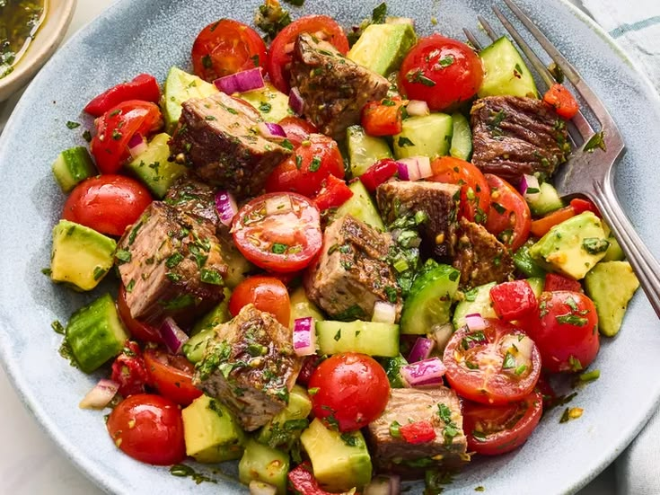

Chopped Chimichurri Steak Salad

This salad is a vibrant and flavorful dish that combines tender grilled steak with fresh vegetables and a zesty chimichurri dressing. It's perfect for a light lunch or dinner!
Ingredients:
- 1 lb flank steak
- 1/4 cup olive oil
- 2 tablespoons red wine vinegar
- 2 cloves garlic, minced
- 1/4 cup fresh parsley, chopped
- 1/4 cup fresh cilantro, chopped
- 1 teaspoon red pepper flakes
- Salt and pepper to taste
- Mixed salad greens (arugula, spinach, romaine)
- Cherry tomatoes, halved
- Cucumber, sliced
- Red onion, thinly sliced
Instructions:
- Season the flank steak with salt and pepper.
- Grill the steak to your desired doneness, then let it rest before slicing.
- In a small bowl, whisk together the olive oil, red wine vinegar, garlic, parsley, cilantro, and red pepper flakes to make the chimichurri dressing.
- In a large bowl, combine the salad greens, cherry tomatoes, cucumber, and red onion.
- Toss the salad with the chimichurri dressing.
- Top with the sliced grilled steak and serve immediately.
Back to Recipes List